Python
Sintaxis del lenguaje de programación Python
A continuación veremos la sintaxis de Python, viendo como podemos empezar a usar el lenguaje creando nuestras primeras variables y
estructuras de control.
El termino sintaxis hace referencia al conjunto de reglas que definen como se tiene que escribir el código en un determinado lenguaje
de programación. Es decir, hace referencia a la forma en la que debemos escribir las instrucciones para que el ordenador,
o más bien lenguaje de programación, nos entienda.
En la mayoría de lenguajes existe una sintaxis común, como por ejemplo el uso de = para asignar un dato a una variable, o el uso de {}
para designar bloques de código, pero Python tiene ciertas particularidades.
La sintaxis es a la programación lo que la gramática es a los idiomas. De la misma forma que la frase “Yo estamos aquí” no es correcta,
el siguiente código en Python no sería correcto, ya que no respeta las normas del lenguaje.
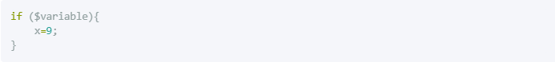
Lo veremos a continuación en detalle, pero Python no soporta el uso de $ ni hace falta terminar las líneas con ; como en otros lenguajes,
y tampoco hay que usar {} en estructuras de control como en el if.
Por otro lado, de la misma forma que un idioma no se habla son simplemente saber todas sus palabras, en la programación no basta con saber
la sintaxis de un lenguaje para programar correctamente en el. Es cierto que sabiendo la sintaxis podremos empezar a programar y a hacer
lo que queramos, pero el uso de un lenguaje de programación va mucho más allá de la sintaxis.
Para empezar a perderle el miedo a la sintaxis de Python, vamos a ver un ejemplo donde vemos cadenas, operadores aritméticos y el uso del condicional if.
El siguiente código simplemente define tres valores a, b y c, realiza unas operaciones con ellos y muestra el resultado por pantalla.
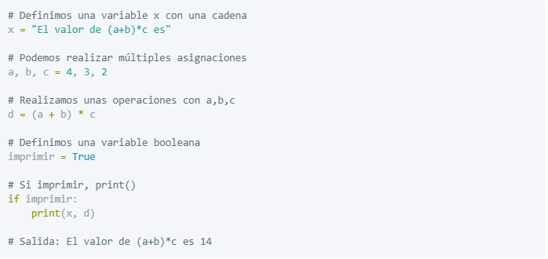
Como puedes observar, la sintaxis de Python es muy parecida al lenguaje natural o pseudocódigo, lo que hace que sea relativamente fácil de leer.
Otra ventaja es que no necesitamos nada más, el código anterior puede ser ejecutado tal cual está. Si conoces otros lenguajes como C o Java,
esto te resultará cómodo, ya que no es necesario crear la típica función main().
Comentarios
Los comentarios son bloques de texto usados para comentar el código. Es decir, para ofrecer a otros programadores o a nuestro yo futuro información
relevante acerca del código que está escrito. A efectos prácticos, para Python es como si no existieran, ya que no son código propiamente dicho,
solo anotaciones.
Los comentarios se inician con # y todo lo que vaya después en la misma línea será considerado un comentario.
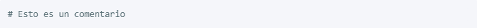
Al igual que en otros lenguajes de programación, podemos también comentar varias líneas de código. Para ello es necesario hacer uso de triples
comillas bien sean simples ''' o dobles """. Es necesario usarlas para abrir el bloque del comentario y para cerrarlo.
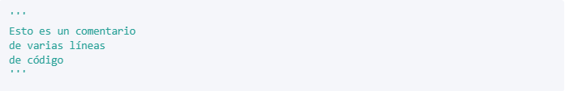
Identación y bloques de código
En Python los bloques de código se representan con identación, y aunque hay un poco de debate con respecto a usar tabulador o espacios,
la norma general es usar cuatro espacios.
En el siguiente código tenemos un condicional if. Justo después tenemos un print() identado con cuatro espacios. Por lo tanto,
todo lo que tenga esa identación pertenecerá al bloque del if.
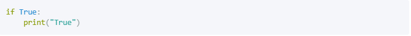
Esto es muy importante ya que el código anterior y el siguiente no son lo mismo. De hecho el siguiente código daría un error ya que el if
no contiene ningún bloque de código, y eso es algo que no se puede hacer en Python.
Por otro lado, a diferencia de en otros lenguajes de programación, no es necesario utilizar ; para terminar cada línea.
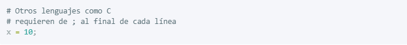
Sin embargo en Python no es necesario, basta con un salto de línea.
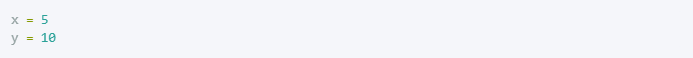
Pero se puede usar el punto y coma ; para tener dos sentencias en la misma línea.
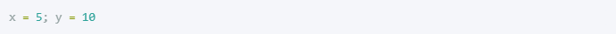
Multiples líneas
En algunas situaciones se puede dar el caso de que queramos tener una sola instrucción en varias línea de código. Uno de los motivos principales
podría ser que fuera demasiado larga, y de hecho en la especificación PEP8 se recomienda que las líneas no excedan los 79 caracteres.
Haciendo uso de \ se puede romper el código en varias líneas, lo que en determinados casos hace que el código sea mucho más legible.
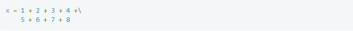
Si por lo contrario estamos dentro de un bloque rodeado con paréntesis (), bastaría con saltar a la siguiente línea.
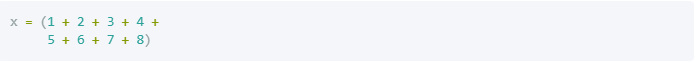
Se puede hacer lo mismo para llamadas a funciones
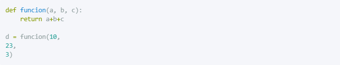
Creando variebles
Anteriormente ya hemos visto como crear una variable y asignarle un valor con el uso de =. Existen también otras formas de hacerlo de una
manera un poco más sofisticada.
Podemos por ejemplo asignar el mismo valor a diferentes variables con el siguiente código.
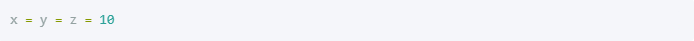
O también podemos asignar varios valores separados por coma.
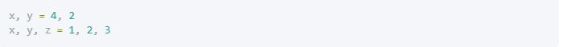
Nombrando variables
Puedes nombrar a tus variables como quieras, pero es importante saber que las mayúsculas y minúsculas son importantes.
Las variables x y X son distintas.
Por otro lado existen ciertas normas a la hora de nombrar variables:
El nombre no puede empezar por un número
No se permite el uso de guiones -
Tampoco se permite el uso de espacios.
Se muestran unos ejemplos de nombres de variables válidos y no válidos.
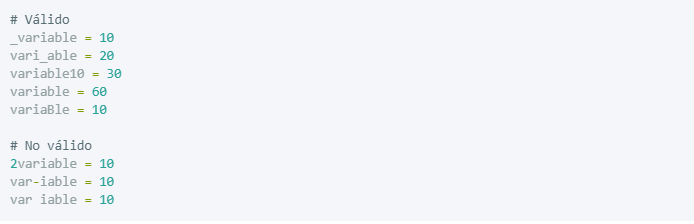
Una última condición para nombrar a una variable en Python, es no usar nombres reservados para Python. Las palabras reservadas son
utilizadas por Python internamente, por lo que no podemos usarlas para nuestras variables o funciones.
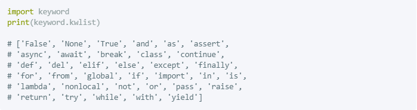
De hecho con el siguiente comando puedes ver todas las palabras clave que no puedes usar.
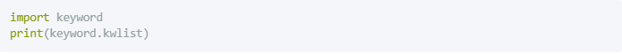
Uso del paréntesis
Python soporta todos los operadores matemáticos más comunes, conocidos como operadores aritméticos. Por lo tanto podemos realizar sumas,
restas, multiplicaciones, exponentes (usando **) y otros que no vamos a explicar por ahora. En el siguiente ejemplo realizamos varias operaciones
en la misma línea, y almacenamos su resultado en y.
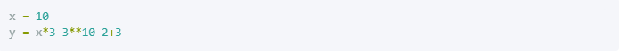
Pero el comportamiento del código anterior y el siguiente es distinto, ya que el uso de paréntesis () da prioridad a unas operaciones sobre otras.
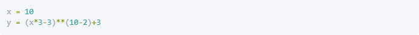
El uso de paréntesis no solo se aplica a los operadores aritméticos, sino que también pueden ser aplicados a otros operadores como los relacionales
o de membresía que vemos en otros posts.
Variable y alcance
Un concepto muy importante cuando definimos una variable, es saber el alcance o scope que tiene. En el siguiente ejemplo la variable con valor 10
tiene un alcance global y la que tiene el valor 5 dentro de la función, tiene un alcance local. Esto significa que cuando hacemos print(x),
estamos accediendo a la variable global x y no a la x definida dentro de la función.
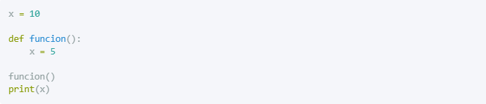
No te preocupes si no lo has entendido. Es un concepto un poco complicado de pillar al principio, pero lo veremos más adelante.
Te recomendamos leer los siguientes posts para entender mejor las funciones y el alcance de las variables:
Funciones en Python y sus argumentos
Paso por valor y por referencia
Variable global en Python
Uso de la función Print()
Por último, en cualquier lenguaje de programación es importante saber lo que va pasando a medida que se ejecutan las diferentes instrucciones.
Por ello, es interesante hacer uso de print() en diferentes secciones del código, ya que nos permiten ver el valor de las variables y diferente
información útil.
Existen muchas formas de usar la función print() y te las explicamos en detalle en este post, pero por ahora basta con
que sepas lo básico.
Como ya hemos visto se puede usar print() para imprimir por pantalla el texto que queramos.
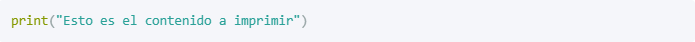
También es posible imprimir el contenido de una variable.
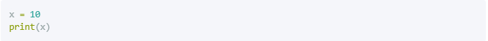
Y separando por comas , los valores, es posible imprimir el texto y el contenido de variables.
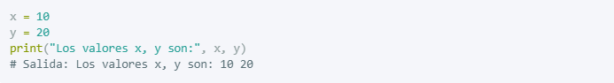
Simbolos del lenguaje de programación Python
Operadores Aritméticos
Entre los operadores aritméticos que Python utiliza, podemos encontrar los siguientes:
| Símbolo | Significado | Ejemplo | Resultado |
| + | Suma | a = 10 + 5 | a es 15 |
| - | Resta | a = 12 - 7 | a es 5 |
| - | Negación | a = -5 | a es -5 |
| * | Multiplicación | a = 7 * 5 | a es 35 |
| ** | Exponente | a = 2 ** 3 | a es 8 |
| / | División | a = 12.5 / 2 | a es 6.25 |
| // | División entera | a = 12.5 / 2 | a es 6.0 |
| % | Módulo | a = 27 % 4 | a es 3 |
A que tipo de paradigma pertenece?
El lenguaje Python es un ejemplo de paradigmas de programación como:
Paradigma Orientado a objetos
Paradigma Imperativo
Paradigma Funcional
Paradigma Reflexivo
Aplicación a descargar para editar y ejecutar
Se puede descargar el compilador oficial de Python en el siguiente link: Aqui
Pero tambien puedes utilizar un editor de codigo como: Atom, VsCode, etc...
Ejemplo de programa
Factorial de N
1 def factorial (num) :
2 if num < 0 :
3 print ("Factorial of negative num does not exist")
4
5 elif num == 0 :
6 return 1
7
8 else :
9 fact = 1
10 while (num > 1) :
11 fact *= num
12 num -= 1
13 return fact
14
15 num = 5;
16
17 print ("Factorial of", num, "is", factorial(num))